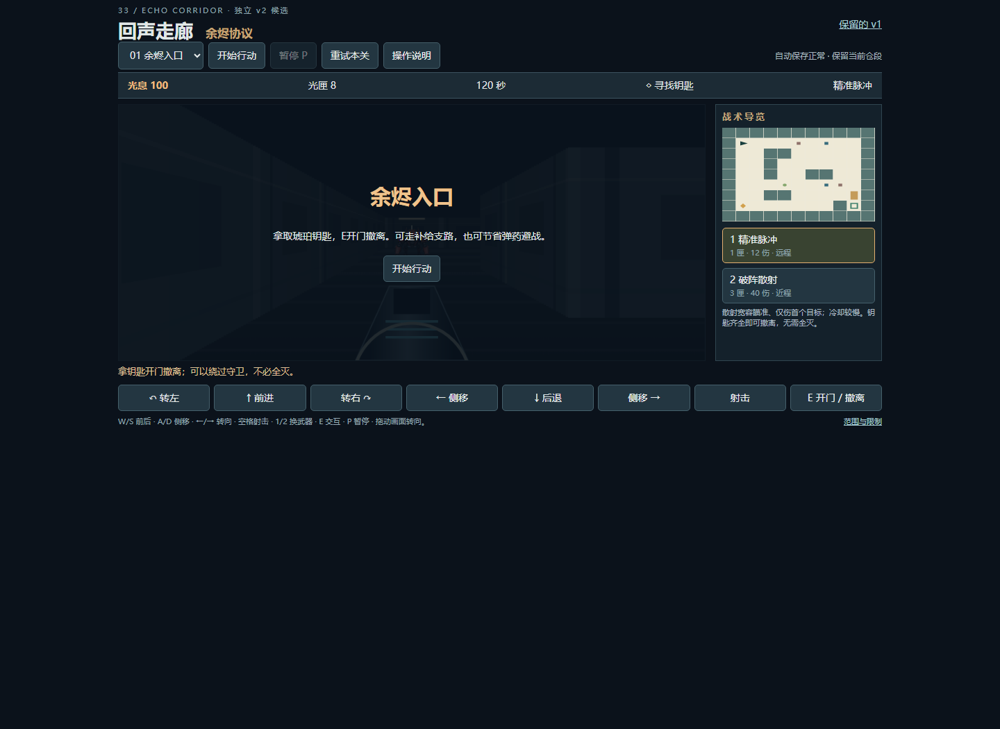
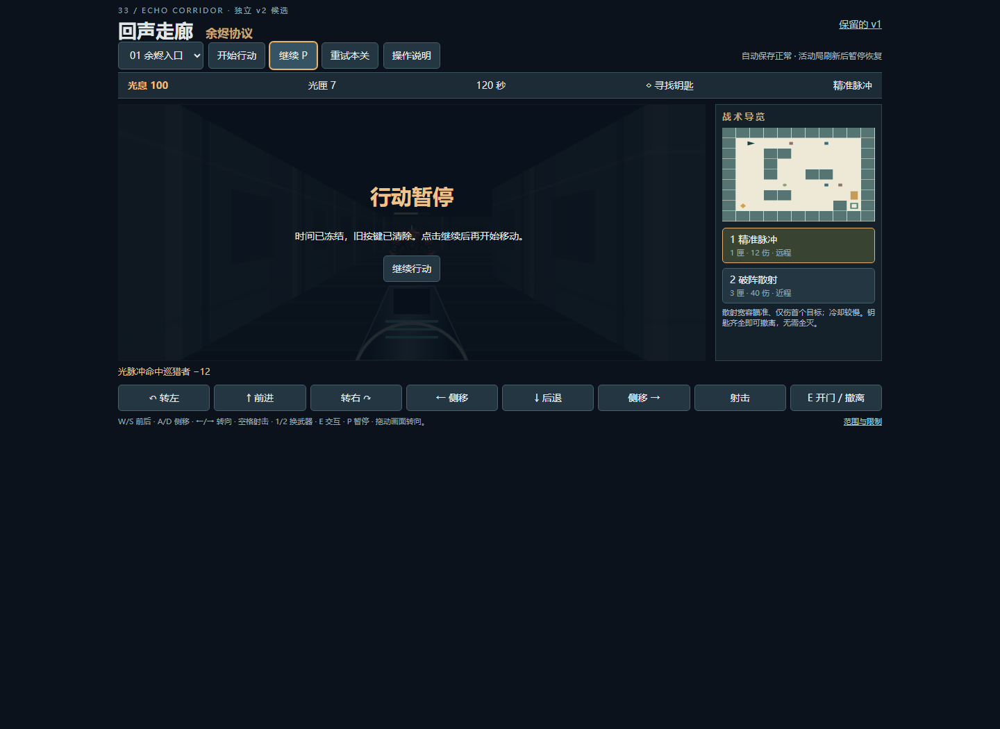
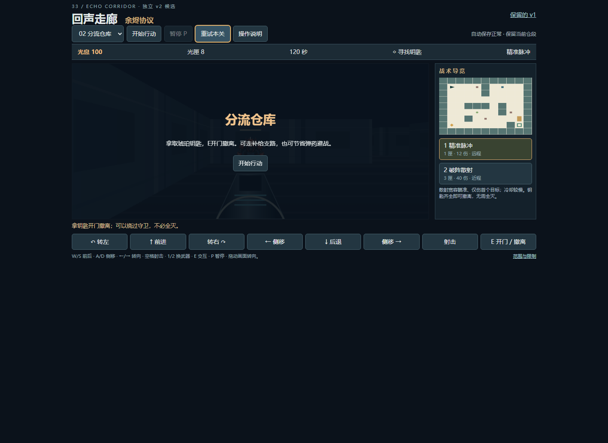
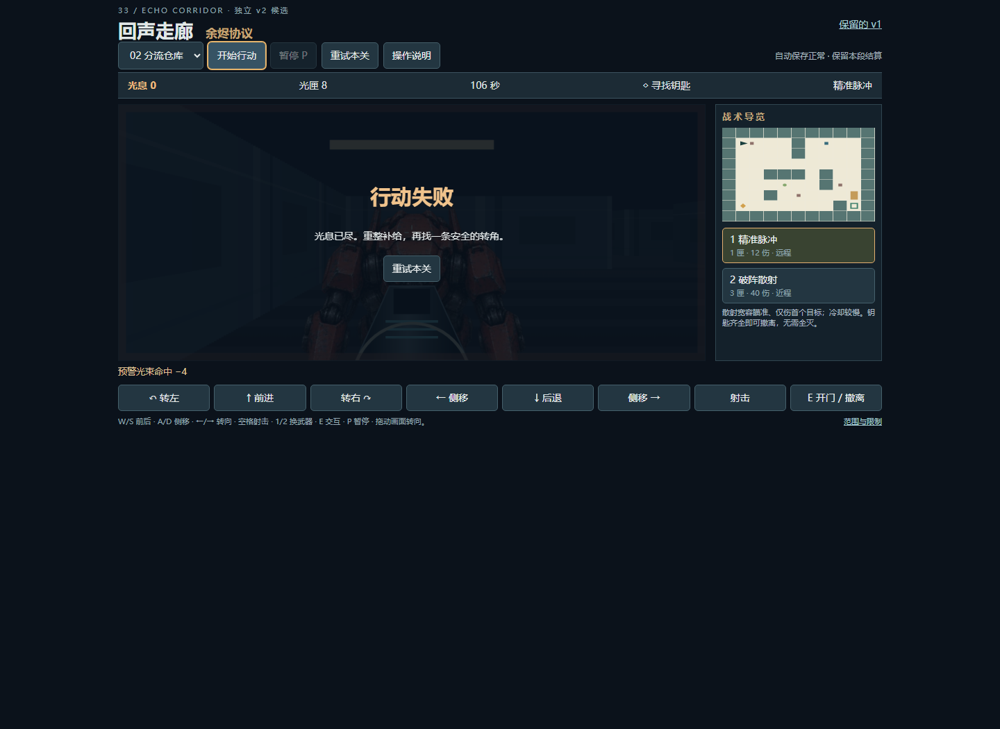
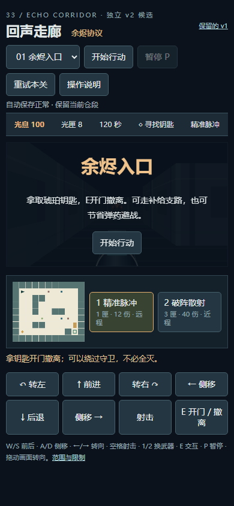
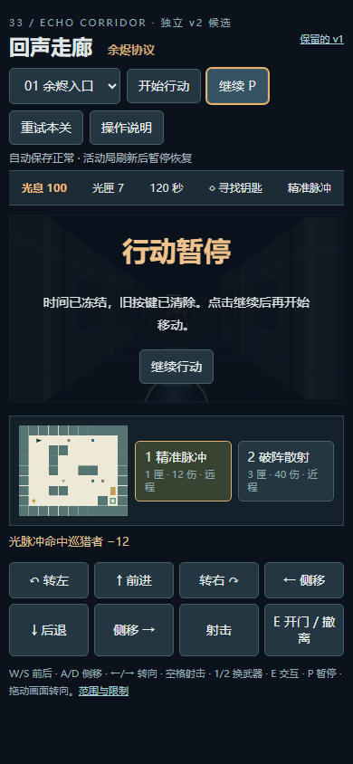
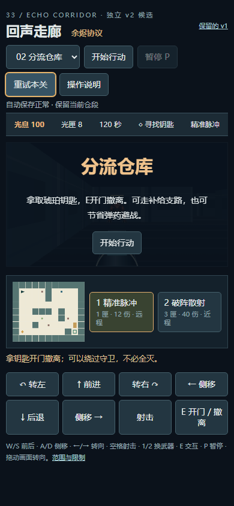
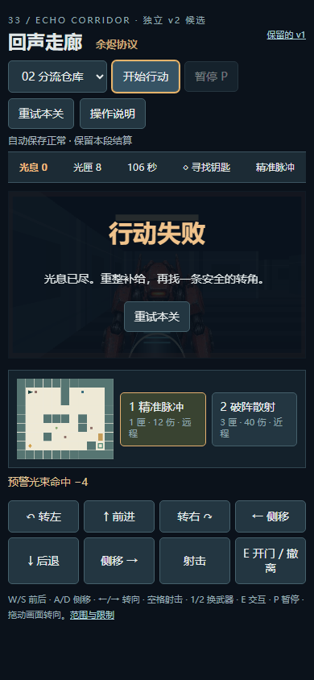
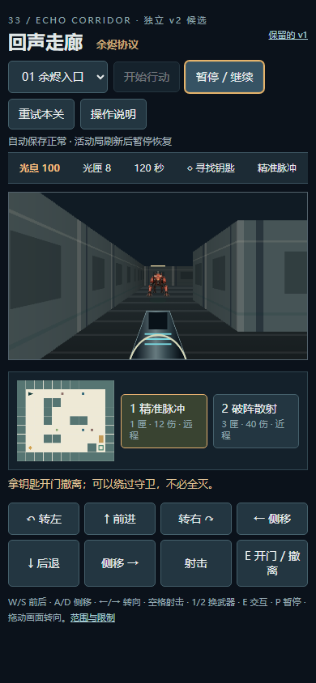
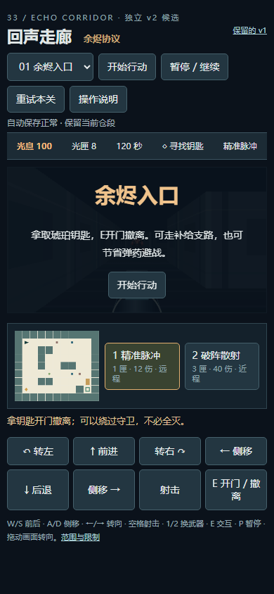

回声走廊：待命暂停误开局修复
操作、结论与边界 · 原始UI记录 · 打开游戏
after-desktop-01-ready
after-desktop-02-ready-ignores-pause after-desktop-03-active-pause
after-desktop-03-active-pause
after-desktop-04-second-ready-refresh
after-desktop-05-natural-loss
after-narrow-01-ready
after-narrow-02-ready-ignores-pauseafter-narrow-03-active-pause
after-narrow-04-second-ready-refresh
after-narrow-05-natural-loss
before-narrow-pause-started
before-narrow-ready